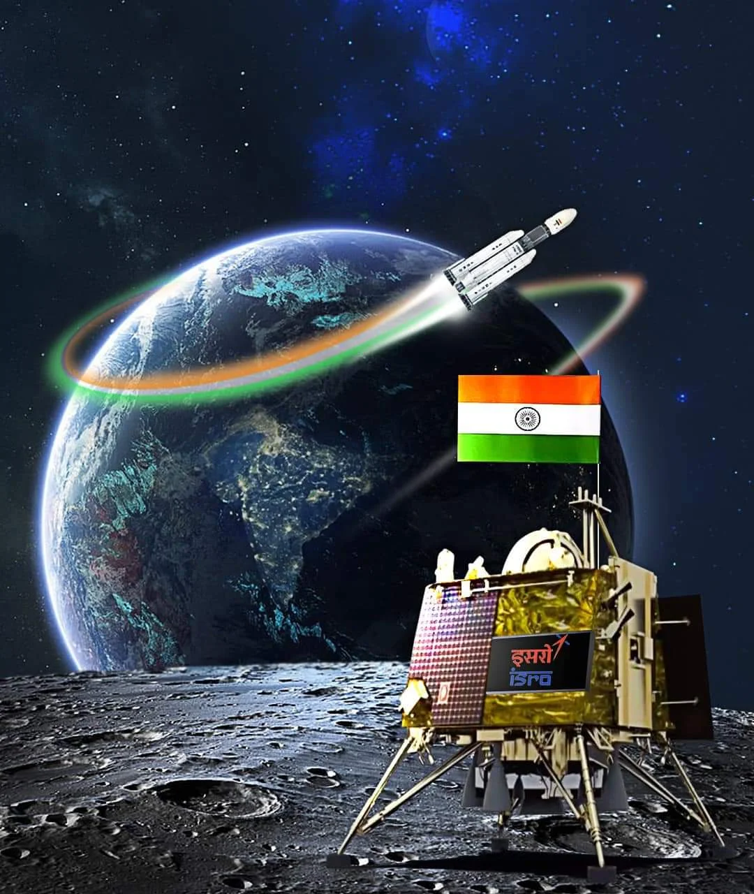

CHANDRAYAN-3
Chandrayaan-3 had been proposed by the Indian Space Research Organisation (ISRO)
as the third mission in the Chandrayaan series, following Chandrayaan-1 and
Chandrayaan-2. Chandrayaan-1 was India's first lunar probe, launched in 2008,
while Chandrayaan-2, launched in 2019, aimed to explore the lunar south pole region.
Chandrayaan-3 was intended to be a follow-up mission, primarily focusing on lunar lander
and rover capabilities. The mission was aimed at furthering India's exploration of the
Moon, with a specific emphasis on enhancing the understanding of the lunar surface
and its resources.
Mission Objectives :
- To demonstrate Safe and Soft Landing on Lunar Surface
- To demonstrate Rover roving on the moon and
- To conduct in-situ scientific experiments.
Timeline of the Chandrayaan 3 Mission
- Launched: July 14, 2023
- Inserted into Lunar Orbit: August 05
- Separation of the Lander Module from the Propulsion Module: August 17
- First Deboosting: August 18
- Deboosting is the slowing down of the spacecraft in an orbit where
the Perilune (closest point to the Moon) is 30 km, and the farthest point
(the Apolune) is 100 km from the landing site in the South Polar Region.
- It is required for the proper landing as the speed needed to land
is much less than the lander.
- Second Deboosting on August 20
- Soft landing on August 23
- The targeted site on the Moon was around 70 degrees South near the Southern pole of the Moon.
- If the Lander had missed the target of the commencement of the soft landing, It would have to wait for 1 month.
- It landed at around 69.36°S and 32.34°E (between Manzinus C and Simpelius N craters).
- Rover started its exploration on August 24